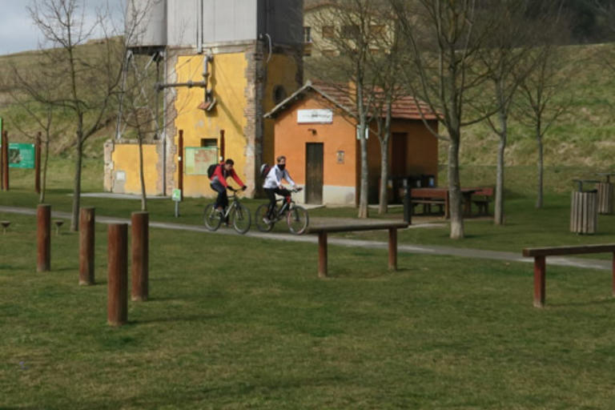

Visita · Sant Joan
La línia de ferrocarril de Ripoll a Sant Joan de les Abadesses va ser construïda entre 1875 i 1880 per la Societat del Ferrocarril i Mines de Sant Joan de les Abadesses, companyia que explotava…